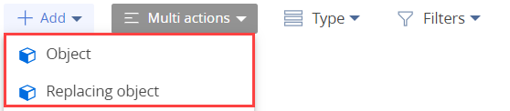
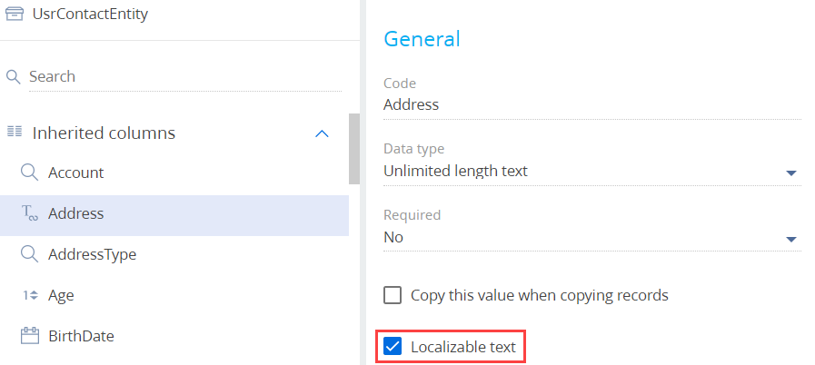
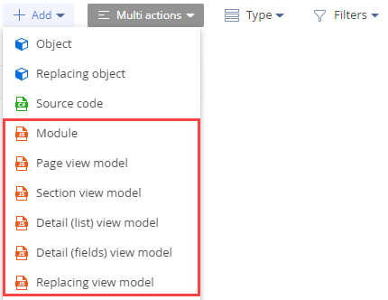
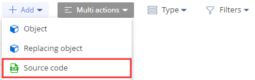
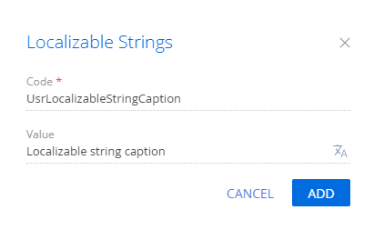

Инструменты, которые позволяют выполнять операции с локализуемыми ресурсами:
- Creatio IDE.
- База данных.
- Система контроля версий SVN.
- Файловая система.
Использовать Creatio IDE для выполнения операций с локализуемыми ресурсами
Использование Creatio IDE позволяет выполнять следующие операции с локализуемыми ресурсами:
- Добавить локализуемую колонку.
- Добавить локализуемую строку.
Добавить локализуемую колонку
Назначение локализуемой колонки — возможность отображения в интерфейсе приложения данных объекта на нескольких языках (т. н. мультиязычие). Значение локализуемой колонки зависит от выбранного в профиле пользователя языка. Локализуемая колонка настраивается в дизайнере объекта, а ее значение хранится в базе данных.
Чтобы добавить локализуемую колонку:
-
Добавьте колонку, которую необходимо локализовать.
- Перейдите в раздел Конфигурация (Configuration) и выберите пользовательский пакет, в который будет добавлена схема.
-
На панели инструментов реестра раздела нажмите Добавить (Add) и выберите вид схемы (Объект (Object) или Замещающий объект (Replacing object)).
 - В дизайнере объектов заполните свойства схемы.
- При необходимости добавьте колонки, которые требуется локализовать, или выберите существующую колонку объекта.
-
В блоке свойств Общие (General) соответствующей колонки установите признак Локализуемый текст (Localizable text).
 - На панели инструментов дизайнера объектов нажмите Сохранить (Save), а затем Опубликовать (Publish).
- Выполните перевод значения локализуемой колонки. Для этого воспользуйтесь инструкцией статьи Перевести элементы интерфейса в разделе Переводы.
В результате колонка будет содержать значения на разных языках. В интерфейсе приложения будет использоваться значение, которое зависит от выбранного в профиле пользователя языка.
Добавить локализуемую строку
Назначение локализуемой строки — возможность отображения в интерфейсе приложения данных модуля на нескольких языках (т. н. мультиязычие). Значение локализуемой строки зависит от выбранного в профиле пользователя языка. Локализуемая строка настраивается в дизайнере модуля и в дизайнере исходного кода, а ее значение хранится в базе данных.
Чтобы добавить локализуемую строку:
- Перейдите в раздел Конфигурация (Configuration) и выберите пользовательский пакет, в который будет добавлена схема.
-
На панели инструментов реестра раздела нажмите Добавить (Add) и выберите вид схемы.
-
Если необходимо локализовать строку клиентского модуля, то выберите один из вариантов:
- Модуль (Module).
- Модель представления страницы (Page view model).
- Модель представления раздела (Section view model).
- Модель представления детали с реестром (Detail (list) view model).
- Модель представления детали с полями (Detail (fields) view model).
- Замещающая модель представления (Replacing view model).
 -
Если необходимо локализовать строку исходного кода, то выберите Исходный код (Source code).

-
- В дизайнере заполните свойства схемы.
-
Добавьте строку, которую требуется локализовать.
- В контекстном меню узла Локализуемые строки (Localizable strings) нажмите кнопку
/scr_add_button.png) .
. -
Заполните свойства локализуемой строки:
- Код (Code) — название локализуемой строки (обязательное свойство). Должно содержать префикс (по умолчанию Usr), указанный в системной настройке Префикс названия объекта (код SchemaNamePrefix).
- Значение (Value) — значение локализуемой строки. По умолчанию введенное значение сохраняется для выбранного в профиле пользователя языка. Чтобы задать значения локализуемой строки на других языках, нажмите кнопку .
 - Для добавления локализуемой строки нажмите Добавить (Add).
- В контекстном меню узла Локализуемые строки (Localizable strings) нажмите кнопку
- На панели инструментов дизайнера нажмите Сохранить (Save), а затем Опубликовать (Publish).
В результате строка будет содержать значения на разных языках. В интерфейсе приложения будет использоваться значение, которое зависит от выбранного в профиле пользователя языка.
Использовать базу данных для выполнения операций с локализуемыми ресурсами
Использование базы данных позволяет выполнять следующие операции с локализуемыми ресурсами:
- Получить локализуемые ресурсы из базы данных.
- Обновить локализуемые ресурсы в базе данных.
- Сохранить локализуемые ресурсы в базе данных.
- Отключить локализуемые ресурсы в базе данных.
Получить локализуемые ресурсы из базы данных
Классы, которые реализуют логику получения локализуемых ресурсов из базы данных:
- Terrasoft.Core.Entities.EntitySchemaQuery — получение данных из базы данных через ORM-модель. Класс по умолчанию поддерживает работу с мультиязычными данными.
- Terrasoft.Core.Entities.Entity — работа с сущностью базы данных.
Подробнее о получении данных из базы данных с помощью классов Terrasoft.Core.Entities.EntitySchemaQuery и Terrasoft.Core.Entities.Entity читайте в статье Доступ к данным через ORM.
Правила формирования выборки мультиязычных данных:
- Если в профиле пользователя выбран основной язык, то выборка данных формируется из основной таблицы базы данных.
- Если в профиле пользователя выбран дополнительный язык и в таблице [SysLocalizableValue] присутствует значение локализуемого ресурса, то выборка данных формируется из таблицы [SysLocalizableValue] базы данных.
- Если в профиле пользователя выбран дополнительный язык и в таблице [SysLocalizableValue] отсутствует значение локализуемого ресурса, то выборка данных формируется из основной таблицы базы данных.
Для выборки данных можно использовать представления (View), которые позволяют получить данные из локализуемых колонок. Для формирования выборки локализуемых данных через представление необходимо настроить локализуемые представления.
Чтобы настроить локализуемые представления:
-
Создайте схему объекта для представления. Шаблон названия схемы: UsrVwИмяСхемыОбъекта.
Обязательные составляющие названия схемы:
- Префикс (по умолчанию Usr), указанный в системной настройке Префикс названия объекта (код SchemaNamePrefix).
- Префикс Vw (сокращение от View) который указывает, что схема является представлением в базе данных.
- Настройте локализуемую колонку. Настройка локализуемых колонок описана в пункте Добавить локализуемую колонку.
- Добавьте новое представление локализации в базе данных.
Обновить локализуемые ресурсы в базе данных
При изменении значения локализуемого ресурса в таблице [SysLocalizableValue] необходимо выполнить обновление локализуемых ресурсов в базе данных.
Чтобы для соответствующей схемы обновить локализуемые ресурсы в базе данных, необходимо с помощью SQL-запроса изменить значение колонки [IsChanged] таблицы [SysPackageResourceChecksum]. В другом случае при обновлении пакета в приложении возникнет конфликт локализуемых ресурсов. Он не будет обнаружен, что приведен к потере значения локализуемого ресурса.
Сохранить локализуемые ресурсы в базе данных
Чтобы сохранить локализуемые ресурсы, необходимо использовать метод Entity.SetColumnValue(), который может принимать параметры типа string и параметры типа LocalizableString.
Сохранить локализуемые ресурсы с использованием параметров типа string
Особенности сохранения локализуемых ресурсов при использовании параметров типа string:
- Если запись добавляется пользователем с дополнительным языком, то данные сохраняются и в основную таблицу объекта Entity, и в таблицу локализации объекта Entity.
- Если запись изменяется пользователем с дополнительным языком, то данные сохраняются в таблицу локализации объекта Entity.
- Если запись добавляется или изменяется пользователем с основным языком, то данные сохраняются в основную таблицу объекта Entity.
Шаблон формирования имени таблицы локализации: [SysИмяОсновнойТаблицыLcz].
Ниже приведен пример сохранения локализуемых ресурсов с использованием параметра типа string для пользователя с основным языком (русский).
При выполнении этого кода пользователем с основным языком (русский) будет выполнен SQL-запрос к основной таблице [AccountType] базы данных. В параметре @P2 указано значение "Новый клиент".
Ниже приведен пример сохранения локализуемых ресурсов с использованием параметра типа string для пользователя с дополнительным языком (например, английским).
При выполнении этого кода пользователем с дополнительным языком (например, английским) будут выполнены:
-
SQL-запрос к основной таблице [AccountType] базы данных. SQL-запрос такой же, как и для основной локализации, но в параметре @P2 указано значение "New Customer".
-
SQL-запрос в таблицу локализации [SysAccountTypeLcz]. В параметре @P5 указано значение "New Customer".
Таким образом, в основную таблицу [AccountType] будет помещено значение, которое не соответствует основной локализации. Чтобы этого избежать, необходимо выполнять сохранение локализуемых ресурсов с использованием параметров типа LocalizableString.
Сохранить локализуемые ресурсы с использованием параметров типа LocalizableString
Ниже приведен пример сохранения данных с использованием параметра типа LocalizableString.
При выполнении этого кода, независимо от выбранного в профиле пользователя языка, будут выполнены:
-
SQL-запрос в основную таблицу [AccountType]. В параметре @P2 указано значение "Новый клиент ru-RU".
-
SQL-запрос в таблицу локализации [SysAccountTypeLcz]. В параметре @P5 указано значение "New Customer en-US".
При выполнении этого кода пользователем с дополнительным языком и отсутствии значения локализуемой строки на основном языке, в основную таблицу [AccountType] будет добавлена запись со значением для дополнительного языка.
Отключить локализуемые ресурсы в базе данных
Чтобы отключить локализуемые ресурсы, необходимо для свойства UseLocalization экземпляра класса EntitySchemaQuery установить значение false. Отключение локализуемых ресурсов не приводит к удалению локализуемых ресурсов из таблиц базы данных и не зависит от выбранного в профиле пользователя языка.
При выполнении этого кода, независимо от выбранного в профиле пользователя языка, будет выполнен SQL-запрос к основной таблице [City] базы данных.
Использовать систему контроля версий SVN для выполнения операций с локализуемыми ресурсами
Использование системы контроля версий SVN позволяет выполнять следующие операции с локализуемыми ресурсами:
- Обновить локализуемые ресурсы из хранилища SVN.
- Фиксировать локализуемые ресурсы в хранилище SVN.
Описание работы с SVN содержится в статье Контроль версий в Subversion.
Обновить локализуемые ресурсы из хранилища SVN
Чтобы обновить локализуемые ресурсы из хранилища SVN, необходимо выполнить обновление пакета из хранилища SVN. Обновление пакета подробно описано в статье Контроль версий в Creatio IDE.
Возможные состояния локализуемых ресурсов:
- Изменено (Modified) — локализуемый ресурс изменен.
- Добавлено (Added) — локализуемый ресурс добавлен.
- Удалено (Deleted) — локализуемый ресурс удален.
- Конфликт (Conflicted) — работа с локализуемым ресурсом выполнялась одновременно двумя разработчиками, один с которых зафиксировал изменения локализуемого ресурса в хранилище SVN.
Фиксировать локализуемые ресурсы в хранилище SVN
Чтобы фиксировать локализуемые ресурсы в хранилище SVN, необходимо выполнить фиксацию пакета в хранилище SVN. Фиксация пакета подробно описана в статье Контроль версий в Creatio IDE.
Используя Creatio IDE, можно заблокировать пакет в хранилище SVN. Блокирование пакета позволяет избежать возникновения состояния Конфликт (Conflicted) локализуемого ресурса, поскольку отключена опция одновременной работы с пакетом. Например, один разработчик вносит изменения в локализуемые ресурсы пакета без его предварительной блокировки. При фиксации пакета в хранилище SVN может возникнуть ситуация, когда в текущем пакете другим разработчиком были изменены и зафиксированы в хранилище SVN эти же локализуемые ресурсы. В этом случае при обновлении пакета в Creatio IDE будет отображен перечень локализуемых ресурсов в состоянии Конфликт (Conflicted). Это означает, что версия и содержимое измененных локализуемых ресурсов не совпадают с версией и содержимым локализуемых ресурсов, зафиксированных в хранилище SVN. При выполнении фиксации изменений локализуемых ресурсов будут утеряны изменения, зафиксированные в хранилище SVN. Такие конфликтные ситуации необходимо решать вручную, используя SVN-клиенты, например, TortoiseSVN.
Использовать файловую систему для выполнения операций с локализуемыми ресурсами
Использование файловой системы позволяет редактировать локализуемые ресурсы.
Чтобы редактировать локализуемые ресурсы из файловой системы:
- Настройте Creatio для работы в файловой системе. Подробнее читайте в статье Внешние IDE.
- Используя SVN-клиент, экспортируйте локализуемые ресурсы в файловую систему.
- Измените локализуемые ресурсы.
- Зафиксируйте изменения в хранилище SVN.